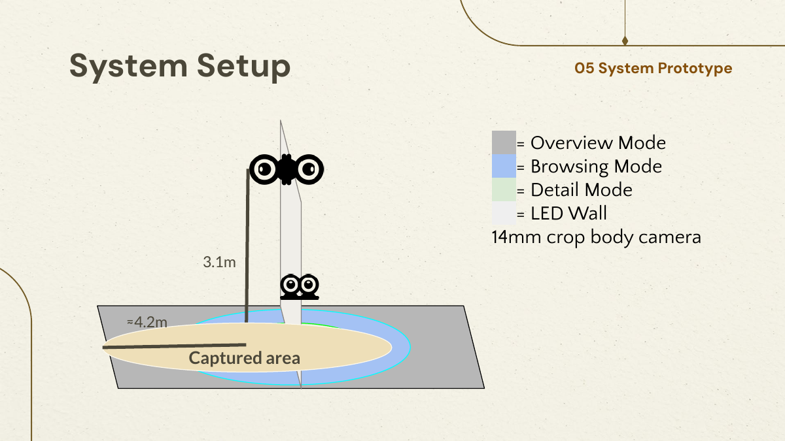
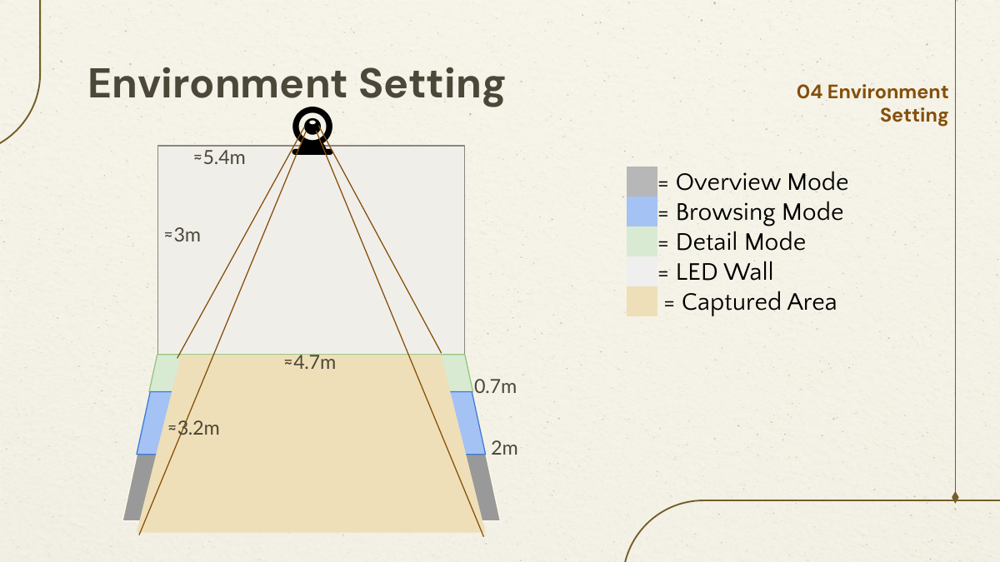
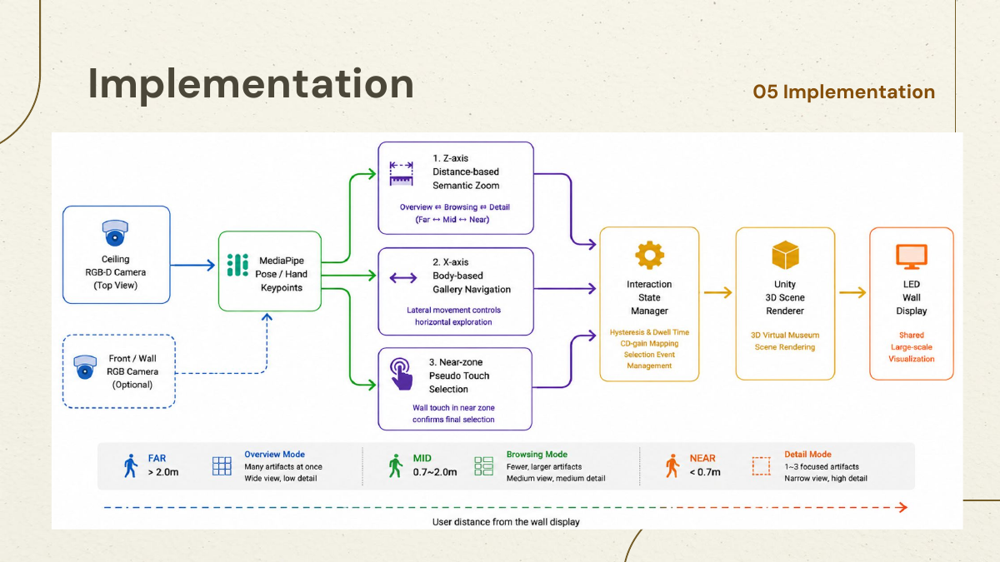
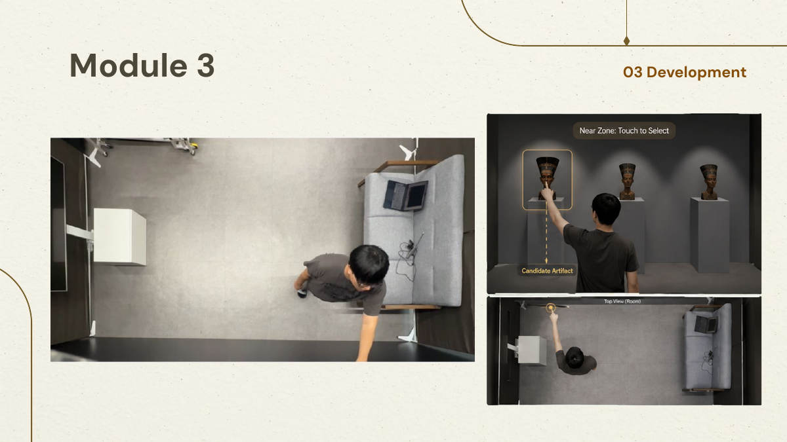

LED wall
1080 × 1920 px
02 System
A room-scale
interaction loop.
A ceiling camera observes whole-body position, Unity translates movement into gallery behavior, and a 5.4 × 3.1 meter LED wall renders the response.
MediaPipe Pose
33 keypoints
Azure Kinect
ceiling camera FoV
3D-scanned artifacts
from four periods

01 / SENSING
The body is
the controller.
A torso midpoint is calculated from shoulder and hip keypoints. Its depth drives semantic zoom, while lateral displacement drives gallery navigation. A ±10 cm dead zone ignores postural sway.


02 / PIPELINE
Sense. Map.
Render.
Camera input enters a tracking manager, is mapped into distance and lateral interaction modules, and updates semantic hierarchy, artifact focus, and wall-display rendering in real time.
03 / TOUCH
Touch is the
explicit commit.
Movement reveals and narrows the collection; touch confirms the final target. This body-reveal → touch-confirm pattern separates lightweight exploration from intentional selection.

04 / PARAMETERS
FAR / MID THRESHOLD2.0 m
MID / NEAR THRESHOLD0.7 m
HYSTERESIS MARGIN± 0.15 m
LATERAL DEAD ZONE± 10 cm
MAX SCROLL VELOCITY≤ 2 items / sec
TOUCH LATENCY BUDGET≤ 100 ms